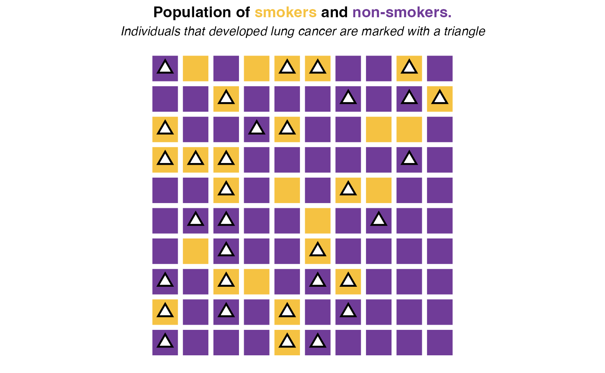
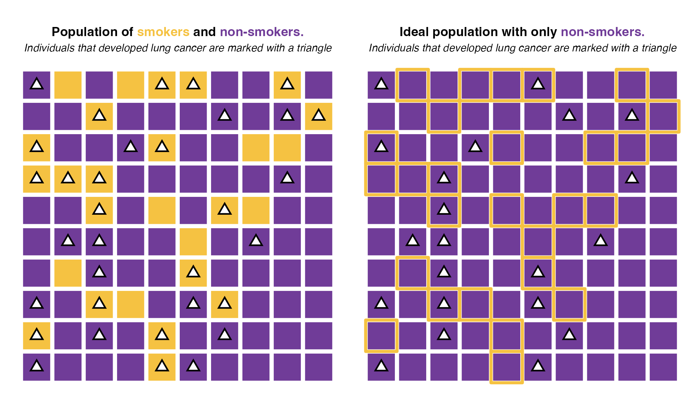
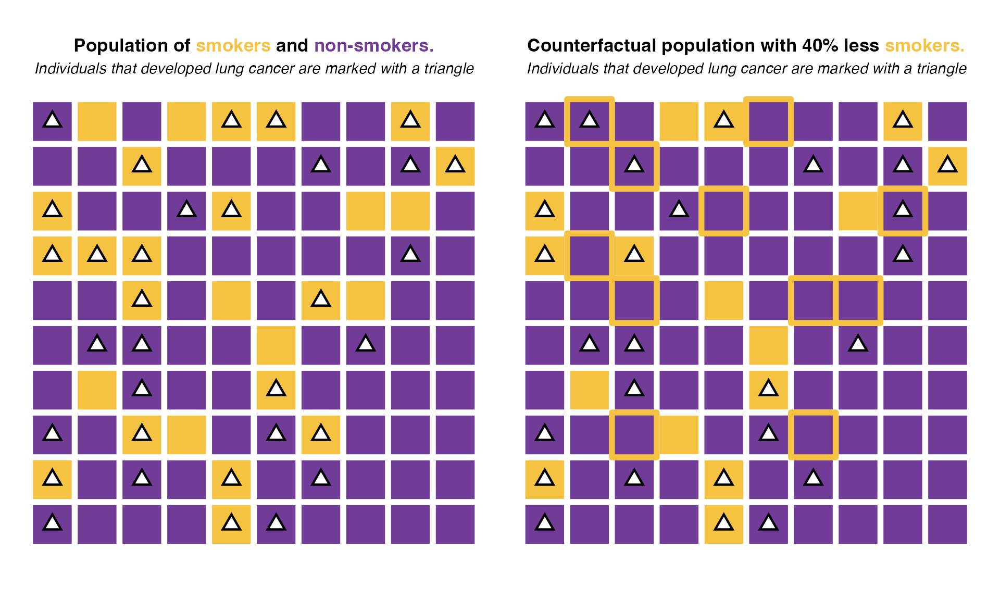

Epidemiology 101: The attributable and impact fractions
Rodrigo Zepeda-Tello
Epidemiology-101.RmdAbstract
A quick introduction to Population Attributable Fractions and Potential Impact Fractions from a comparative risk assessment perspective.
The Population Attributable Fraction
The Population Attributable Fraction (PAF) (or Population Attributable Risk) quantifies the proportion of cases (either morbidity or mortality) attributable to exposure to a certain risk factor. The PAF is estimated by constructing a counterfactual scenario where exposure to the risk factor is at the Theoretical Minimum Risk Exposure Level (TMREL). This level could be \(0\) exposure (e.g. for lead and cigarette smoke), or an ideal exposure level (e.g. sodium intake of 2000 or systolic blood pressure under 120mmHg). The PAF thus quantifies the percent cases that would not happen in an ideal scenario where exposure is at the level that minimizes risk.
In this section we will estimate the population attributable fraction following three examples of growing complexity.
Note Gefeller (1992) counts 16 different names in the literature for the Population Attributable Fraction. This include: ‘etiologic fraction’, ‘population attributable risk’, ‘attributable fraction’, ‘attributable risk’, and ‘assigned share’.
Unrrealistic example with an ideal population
Consider a population of 100 individuals each either current
and past smokers (Smoking status == Yes) or
never-smokers (Smoking status == No). From
this population, a total of 33 individuals developed lung cancer with 18
of them being smokers. This is represented by the following figure:

In this population, the probability of developing cancer if you are a smoker is 18 / 27 = 66.67% while the probability of having cancer if you are not a smoker is 15 / 73 = 20.55%. Hence if under an ideal scenario, no one had ever smoked, we would expect only around 20.55% of cases among the individuals that (today) are marked as smokers. Such ideal scenario would look like this:

Under this ideal scenario, only 21 individuals would develop lung cancer (vs 33 in the real population). So 33 - 21 = 12 cases would be avoided if exposure was reduced to the minimum risk (in this case, not smoking). Those 12 cases represent 36% of all cases (total 33). Thus the population attributable fraction of smoking in this case would be 36%. That is, 36% of all lung cancer cases in this population are attributable to smoking.
Example with binary relative risks
Because ideal realizations of our population don’t exist we usually work with relative risks to construct them. Following the same example as before but now in table form:
| Smokers | Non smokers | Total | |
|---|---|---|---|
| Lung cancer | 18 | 15 | 33 |
| No lung cancer | 9 | 58 | 67 |
| Total | 27 | 73 | 100 |
The relative risk (RR) of lung cancer given smoking is given by the classic formula: (18*73)/(58*27) = 3.2. That is, smoking results in a risk of cancer 3.2 times larger than not smoking.
The populational average relative risk (\(\mathbb{E}[RR]\)) is given by the average risk in the whole population. It corresponds to the weighted average of the relative risk by each exposure level. In our case:
\(\mathbb{E}[RR] =\) 3.2*(27/100) + 1*(73/100) = 1.6.
Where the relative risk of 1 is the corresponding risk of the minimum-risk level: the non_smokers’ reference risk. Finally, the population attributable fraction is defined as the populational average relative risk minus the risk under the theoretical minimum risk level (of 1) divided by the same populational average relative risk:
\[ \textrm{PAF} = \dfrac{\mathbb{E}\left[RR\right] - 1}{\mathbb{E}\left[RR\right]} \] In our case: (3.2 - 1)/3.2 = 0.3726474. That is, 37% of lung cancer cases in this population are attributable to smoking.
Note Notice that this result is almost the same as the one from the previous example (paf of 36%). The numbers differ because of rounding.
(Math) A note about the formula
You can skip this section
The formula
\[ \textrm{PAF} = \dfrac{\mathbb{E}\left[RR\right] - 1}{\mathbb{E}\left[RR\right]} \]
is identical (with different notation) to the one given by MacMahon, Pugh, et al. (1970). This has been shown by Leviton (1973) to be equivalent to Levin’s formula Levin (1953) which is usually taught in epidemiology courses.
Example with categorical relative risks
A more nuanced approach to risk modelling is to model dose-dependent
relative risks. In our case this means modelling different relative
risks accounting for the amount of cigarettes. For this to work, we’ll
assume that in our population we measured the amount of cigarettes per
day in four categories 0 (non-smokers),
< 5, 5-10 and 10+:
The follwing table summarises the number of smokers per category also estimating the relative risk against non-smokers:
| Number of individuals | With lung cancer | Relative risk | |
|---|---|---|---|
| Non-smokers | 73 | 15 | 1 |
< 5 |
16 | 11 | 3.35 |
5-10 |
8 | 6 | 3.65 |
10+ |
3 | 3 | 4.87 |
The relative risk is then a function that depends upon the exposure. All relative risks (even binary risks like in the previous example) are functions. A relative risk takes an exposure level (which can be continuous, categorical or binary) and returns a relative risk value according to that exposure level. As our interest resides on the population, we utilice the populational average relative risk, given by weighted mean of the relative risk at the exposure levels. The weights are given by the exposure prevalence in the population.
In our example this results in the following expression:
\(\mathbb{E}[RR] =\) 1*(73/100) + 3.35*(16/100) + 3.65*(8/100) + 4.87*(3/100) = 1.7
The population attributable fraction is given by the difference between this relative risk and the theoretical minimum risk of one divided by the populational average risk:
\(\textrm{PAF} =\) (1.7 - 1)/1.7 = 0.41.
This means that 41% of lung cancer cases in this population are attributable to smoking.
(Math) A note about the formula
You can skip this section
Note that in the case of categorical risks
\[ \mathbb{E}[RR] =\sum\limits_{i} p_i RR_i \] where \(RR_i\) is the relative risk for the \(i\)-th category and \(p_i\) is the proportion of individuals in that category. The formula of the attributable fraction in this case,
\[ \textrm{PAF} = \dfrac{\mathbb{E}\left[RR\right] - 1}{\mathbb{E}\left[RR\right]} \] can thus be rewritten in the form presented by Walter (1976):
\[ \textrm{PAF} = \dfrac{\sum_{i} p_i RR_i - 1}{\sum\limits_{i} p_i RR_i } \]
Code
See pifpaf::pif() for its implementation in the code.
The Potential Impact Fraction
The Potential Impact Fraction (PIF) (or Generalized Impact Fraction) represents a generalization over the PAF. It quantifies the proportion of disease (or mortality) cases that would be prevented by changing the exposure to a certain risk factor. For example:
An intervention that reduces the population’s body mass index (BMI) by 1 unit.
A ban on smoking in some public spaces such that exposure to second-hand cigarrete smoke is halfed.
A change in sodium consumption among high-dose consumers.
NOTE The PAF is a particular case of the PIF when the change in exposure is a reduction to the theoretical minimum risk level. However, other levels of exposure are possible.
In this section we’ll go over the previous examples for the PAF but, in this case, for the PIF.
Unrrealistic example with a counterfactual population
We consider the same population of 100 individuals as before divided in smokers and non-smokers. We’ll assume a scenario in which by some public policy, we reduced smoker prevalence by 40%. This would mean that from the 27 smokers in the population, only 16 would continue to smoke after this intervention.

Under this scenario, only 28 individuals would develop lung cancer (vs 33 in the real population). So 33 - 28 = 5 cases would be avoided if exposure was reduced to the minimum risk (in this case, not smoking). Those 5 cases represent 15%of all cases. Thus the potential impact fraction of reducing the smoker population by 40% would be 15%. That is, 15% of all lung cancer cases in this population would be avoided if we reduced the amount of smokers by 40%.
PIF example with binary relative risks
In this section we follow the same example as in the “Example with binary relative risks”. In that section, we concluded that our population’s relative risk was of 3.2.
To estimate the potential impact fraction we need to compare the population average relative risk against the population average relative risk under the counterfactual. That is, the expected relative risk under the counterfactual scenario. The population average relative risk is estimated in the same way as before:
\(\mathbb{E}[RR] =\) 3.2*(27/100) + 1*(73/100) = 1.6.
And the population average relative risk under the counterfactual now uses the fact that only 60% of previous smokers remain smokers. This implies that the smoking prevalences change:
\(\mathbb{E}[RR_{cft}] =\) 3.2*(0.6*27/100) + 1*(73 + 0.4*27)/100) = 1.4.
Finally we compare the population average relative risks in the potential impact fraction:
\(\text{PIF} = \dfrac{\mathbb{E}[RR] - \mathbb{E}[RR_{cft}]}{\mathbb{E}[RR]} =\) (1.6 - 1.4)/1.6 = 0.149
That is, 15% of cases would be reduced by reducing the population’s smoking prevalence by 40%.
PIF example with categorical relative risks
In this section we follow the same example as in the “Example with
categorical relative risks”. Here we’ll build a more complex
counterfactual for the example’s sake. We will consider that 40% of
smokers in the <5 category stop smoking, 20% of smokers
in the 5-10 category stop smoking and only 10% of the
smokers in the 10+ category stop their cigarrete
consumption. A complement to the table in the previous section is given
by:
| Number of individuals | With lung cancer | Relative risk | Percent reduction | Expected counterfactual prevalence | |
|---|---|---|---|---|---|
| Non-smokers | 73 | 15 | 1 | — | 81.3 |
< 5 |
16 | 11 | 3.35 | 40% | 9.6 |
5-10 |
8 | 6 | 3.65 | 20% | 6.4 |
10+ |
3 | 3 | 4.87 | 10% | 2.7 |
The populational average relative risk is the same as in the case of PAF:
\(\mathbb{E}[RR] =\) 1*(73/100) + 3.35*(16/100) + 3.65*(8/100) + 4.87*(3/100) = 1.7
while the population average relative risk under the counterfactual now uses the expected prevalences under the counterfactual
\(\mathbb{E}[RR_{cft}] =\) 1*(81.3/100) + 3.35*(9.6/100) + 3.65*(6.4/100) + 4.87*(2.7/100) = 1.5
Finally we plug our results into the potential impact fraction:
\(\text{PIF} = \dfrac{\mathbb{E}[RR] - \mathbb{E}[RR_{cft}]}{\mathbb{E}[RR]} =\) (1.7 - 1.5)/1.7 = 0.118
That is, 12% of cases would be reduced by reducing the population’s smoking prevalence according to the table:
| Percent reduction | |
|---|---|
| Non-smokers | — |
< 5 |
40% |
5-10 |
20% |
10+ |
10% |
(Math) A note about the formula
You can skip this section
Note that the population average relative risk under the counterfactual can be written as:
\[ \mathbb{E}[RR_{cft}] =\sum\limits_{i} p_i' RR_i \] where \(RR_i\) is the relative risk for the \(i\)-th category and \(p'_i\) is the proportion of individuals in that category in the counterfactual scenario. The formula of the potential impact fraction in this case,
\[ \textrm{PIF} = \dfrac{\mathbb{E}\left[RR\right] - \mathbb{E}\left[RR_{cft}\right]}{\mathbb{E}\left[RR\right]} \] is equivalent (after substitution) to the one frequently presented in textbooks according to Khosravi et al. (2021):
\[ \textrm{PIF} = \dfrac{\sum_{i} p_i RR_i - \sum_{i} p_i' RR_i }{\sum_{i} p_i RR_i}. \] ### Code
See pifpaf::pif() for its implementation in the code.
Combining multiple fractions (multiple PIF or PAF)
Same outcome and risk factors, different population
For the same outcome and risk factor (e.g. lung cancer mortality) population attributable fractions (respectively, potential impact fractions with identical counterfactuals) can be combined if they represent the fractions of disjointed populations. As an example, one can combine the fraction of men and women by multiplying each fraction times the proportion of the population:
\[ \textrm{PAF}_{\textrm{Total}} = \textrm{PAF}_{\text{Men}} + \textrm{PAF}_{\text{Women}} \]
Or combine the fractions across distinct age-groups multiplying times the proportion of the population in each group:
\[ \textrm{PAF}_{\textrm{Total}} = p_{\text{age } 1} \cdot \textrm{PAF}_{\text{age } 1} + p_{\text{age } 2} \cdot \textrm{PAF}_{\text{age } 2} + \dots + p_{\text{age } K} \cdot \textrm{PAF}_{\text{age } K} \]
In general, the formula is a weighted sum of the fraction times the population percent:
\[ \textrm{PAF}_{\textrm{Total}} = \sum\limits_{i} p_i \cdot \textrm{PAF}_i \]
and respectively:
\[ \textrm{PIF}_{\textrm{Total}} = \sum\limits_{i} p_i \cdot \textrm{PIF}_i \]
Populations that are not disjointed (as in the case of
males and individuals < 40yrs) cannot be
summed as the same people would be counted twice.
Same outcome and population, different risk factors
For the same population (e.g. mortality) multiple attributable fractions from independent uncorrelated risk factors can be combined. As an example one can combine the population attributable mortality for lead exposure and for radiation exposure into cancer (assuming exposure is uncorrelated in our population) by multiplying Ezzati et al. (2003):
\[ \textrm{PAF}_{\text{Total}} = 1 - (1 - \textrm{PAF}_{\text{Lead}})\times(1 - \textrm{PAF}_{\text{Radiation}}) \]
In general for multiple uncorrelated risk factors the formula is:
\[ \textrm{PAF}_{\text{Total}} = 1 - \prod\limits_{k} (1 - \textrm{PAF}_k) \]
This formula also applies for Potential Impact Fractions:
\[ \textrm{PIF}_{\text{Total}} = 1 - \prod\limits_{k} (1 - \textrm{PIF}_k) \]
where \(\textrm{PIF}_k\) represents the impact fraction for category \(k\).
Code
See pifpaf::pif_combine() for its implementation in the code.